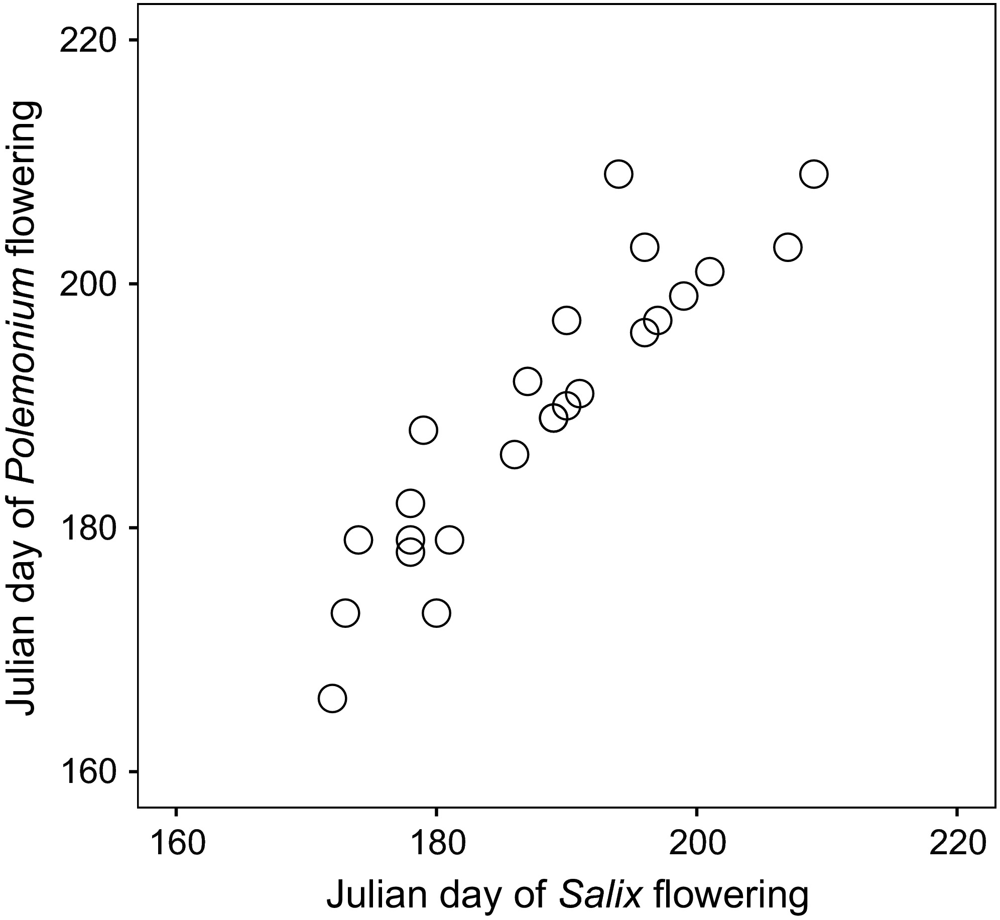

A flipped classroom introduction to Python inspired by and for life sciences
HTML version
bit.ly/mooer2026
Course Materials
ejamezquita.github.io/plnt_sci2500
A flipped classroom introduction to Python inspired by and for life sciences
HTML version
bit.ly/mooer2026
Course Materials
ejamezquita.github.io/plnt_sci2500
 Erik J. Amézquita
Erik J. Amézquita



The class materials are heavily inspired by those of CMSE 201 - Introduction to Computational Modeling at Michigan State University and by Plants & Python.
Kettenbach JA, Miller-Struttmann N, Moffett Z, Galen C (2017). How shrub encroachment under climate change could threaten pollination services for alpine wildflowers. Ecol Evol. 7: 6963–6971.